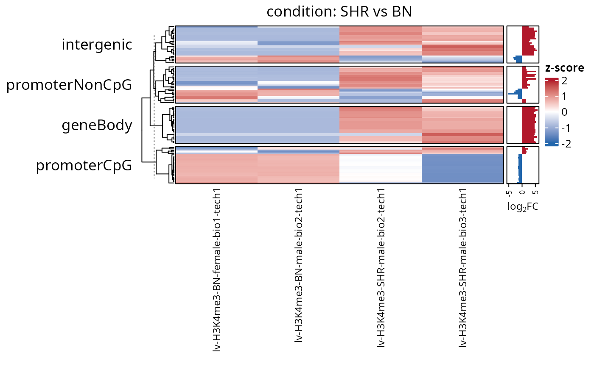
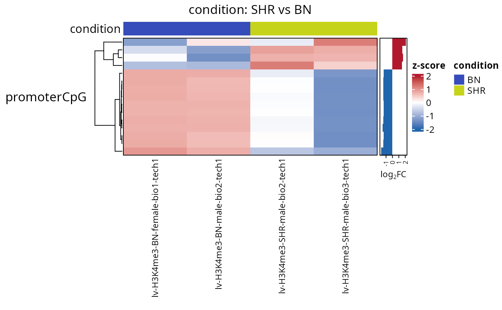

Draws the signal of the regions responding most strongly to a contrast, as a heatmap with one block of rows per region set. The values come from the counts carried by the result, the samples are annotated from the colData, and the log2 fold change of every region is drawn next to it.
plotTopHeatmap(
results,
n = 25,
counts = NULL,
contrast = NULL,
set = NULL,
sortBy = "log2FC",
direction = "both",
FDR = NULL,
log2FC = NULL,
assay = NULL,
scaleRows = TRUE,
annotationColumns = NULL,
showLog2FC = TRUE,
border = TRUE,
showRegionNames = FALSE,
clusterColumns = FALSE,
clusterRowsWithinSet = TRUE,
colours = NULL,
limits = NULL,
title = NULL,
...
)RegionSetDE.results or RegionSetDE.resultsList object.
Numeric value with the number of regions taken from each region set. Default: 25.
RegionSetDE.counts object holding the values, when the result carries none. Default: NULL.
String with the name of the contrast to draw, or its position, when results holds several of them. Default: NULL.
Character vector with the names of the region sets to draw. Default: NULL, all of them.
String with the ranking used to pick the regions, one of "log2FC", "FDR" and "stat". Default: "log2FC".
String restricting the regions to one direction of change, one of "both", "up" and "down". Default: "both".
Numeric value with the adjusted p-value cut-off applied before the ranking. Default: NULL, the threshold stored in the object.
Numeric value with the absolute log2 fold change cut-off applied before the ranking. Default: NULL, the threshold stored in the object.
String with the name of the assay to draw. Default: NULL, the normalised assay when present.
Logical value to indicate whether every row must be centred and scaled, so that the colour shows the shift between samples rather than how much signal the region carries. Default: TRUE.
Character vector with the colData columns drawn above the heatmap. Default: NULL, none.
Logical value to indicate whether the log2 fold change of every region must be drawn as a bar next to the rows. Default: TRUE.
Logical value to indicate whether a frame must be drawn around each block of rows and around the barplot. Default: TRUE.
Logical value to indicate whether the region identifiers must be written. Default: FALSE.
Logical value to indicate whether the samples must be clustered rather than kept in the order of the object. Default: FALSE.
Logical value to indicate whether the rows must be clustered inside each set block. Default: TRUE.
Character vector of three colours for the low, middle and high ends of the scale. Default: NULL.
Numeric vector of length two with the range of the colour scale, either value possibly NA to take that end from the data. Values outside are drawn at the nearest end rather than dropped, and how many were is reported. Default: NULL, plus and minus two for scaled rows and the first and last percentiles otherwise.
String with the title of the heatmap. Default: NULL, the contrast.
Further arguments passed to ComplexHeatmap::Heatmap.
A Heatmap object, drawn when printed.
Ranking by "log2FC" sorts on the effect size among the regions that already passed the FDR cut-off, which is usually what a figure of this kind is meant to show. Ranking by "FDR" gives the regions the model is most certain about, and on a well powered object those are often the ones with the smallest effects.
limits fixes the range the colour scale covers, with NA on either end meaning that end follows the data. Anything past a limit is drawn at the end colour rather than left blank, which keeps the cell visible at the cost of hiding how far past it went, so the number of cells it happened to is reported.
scaleRows decides what the colour means, and the two answers are not interchangeable. Scaled rows show the pattern between the samples and put a region moving from 2 to 4 reads next to one moving from 200 to 400; unscaled rows keep the abundance visible and let a broad domain dominate the palette. The default is the scaled one because the figure is about a contrast, and the abundance is available in the average.signal column and in plotResultsMA.
The bars carry the colour of the direction they point to and no outline of their own, so at forty rows per block they stay readable; the frame around them is the annotation box, drawn to match the blocks of the heatmap.
On a tiled object the rows of the counts are tiles, so a region contributes several of them. Only the tile carrying the region level statistic is drawn, which is the representative tile chosen by the Simes combination in testRegions.
fit <- loadExampleData("fit", verbose = FALSE)
results <- testRegions(fit, contrast = c("condition", "SHR", "BN"), verbose = FALSE)
# FDR = 1 ranks the regions instead of filtering them, which this small
# example dataset needs to fill a heatmap
plotTopHeatmap(results, n = 25, FDR = 1)

plotTopHeatmap(results, n = 15, set = "promoterCpG", FDR = 1,
annotationColumns = "condition")
